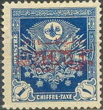
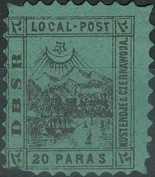
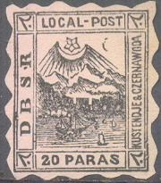
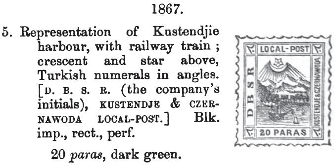
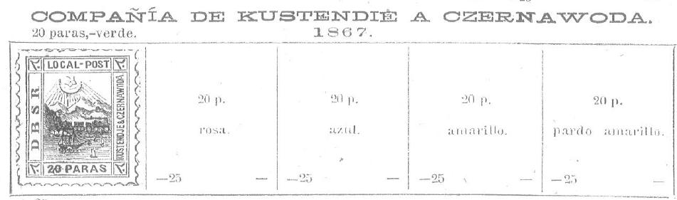
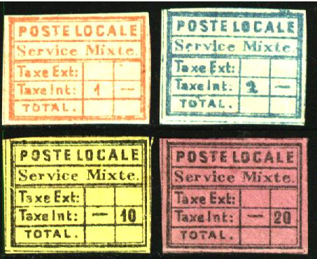
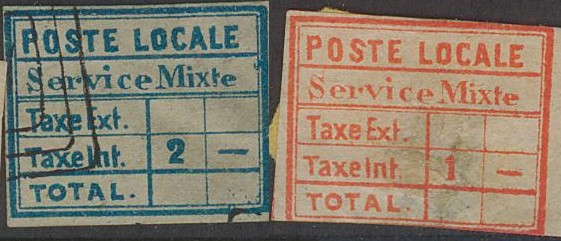
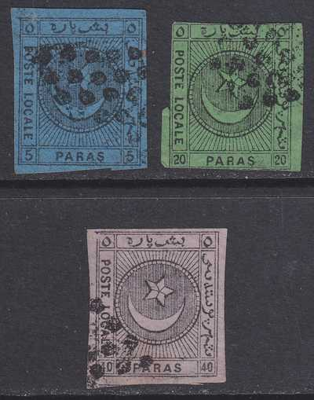
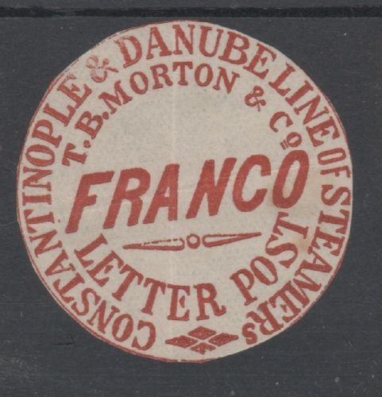

Return To Catalogue - Turkey - Turkey fiscal stamps
Note: on my website many of the
pictures can not be seen! They are of course present in the
catalogue;
contact me if you want to purchase it.
Besides the postage due stamps that are in a similar design as the postage stamps (see there), in 1914 some special postage due stamps were issued.
5 pa red 20 pa red 1 Pi blue 2 Pi grey
Value of the stamps |
|||
vc = very common c = common * = not so common ** = uncommon |
*** = very uncommon R = rare RR = very rare RRR = extremely rare |
||
| Value | Unused | Used | Remarks |
| 5 pa | c | c | |
| 20 pa | c | c | |
| 1 Pi | * | * | |
| 2 Pi | * | * | |
Overprinted with text (armistice issue, 1919)

(red text) on 1 Pi blue
Value of the stamps |
|||
vc = very common c = common * = not so common ** = uncommon |
*** = very uncommon R = rare RR = very rare RRR = extremely rare |
||
| Value | Unused | Used | Remarks |
| 1 Pi | RR | RR | |
Several fiscal stamps were overprinted in 1920 to be used as postage stamps, because of a shortage of ordinary postage stamps, examples:
These stamps often received, next to the ordinary cancel, a prescribed cut (or even more). Damaged stamps are therefore quite usual.
Examples:
(Crescent in center, four stars in each corner)
1 Pi yellow 60 pa brown 3 Pi orange 6 Pi lilac
(Star with 'Toughra' in center, inscription "POSTES
OTTOMANES" below)

This might be a reprint
20 Pa black on green Other values exist, but were never officially issued.
The stamps of Kustendje & Czernawoda
(Romania) were used for post of the Danube and Black Sea Railway
(DBSR) Co.The post formed a link between Kustendje (Constanza),
the Danube Steam Navigation Co`s.mail - boats and the Austrian
Lloyd, accelerating the service from Central Europe to the
Levant. Stamps used on letters from Kustendje or Czernawoda
passed as loose letters over the railway and are found in
combination with stamps of Austrian Italy. The territory belonged
to Turkey at that time.
Reprints exists (3 different reprints were made around 1890 by
M.Kaiser in Vienna, source
http://www.romaniastamps.com/local/localpost.htm) on several
other colors of paper (blue, orange, pink and yellow). According
to that site, three cancels (all circular) are known on these
stamps:
1) "LLOYD AGENZIE KUSTENDJE" with day and month
2) "KUSTENDJE TURQUIE" with day, month and year
3) "KUSTENDJE" with day, month and year.


Reprint with line connecting the bottom of the 'R' of 'DBSR' to
the frameline to the right of it. Not all reprints have this
line, but if such a line is present, it is surely a reprint.


Reprints in non-existing colors.
Forgeries exist:
Two imperforate forgeries (Fournier?)
Fournier(?) forgeries as well.
The above forgeries have too prominent rays below the star. The ship above the second 'A' of 'PARAS' is connected to the frameline below it.
A Spiro(?) forgery exists with no "-" between "LOCAL" and "POST". I have no image right now.
At least 3 other forgeries exist with no dot behind "CZERNAWODA". Two of them with a too large star of which in one forgery the star touches the moon.



Literature: S. Ringstrom and H.E. Tesler "The Private Ship Letter Stamps of the World Part 2".

10 pa black on yellow 20 pa black on lilac 1 pi red 2 pi blue
Forgeries? unissued stamps? 1 pi black:
Probably a forgery, two horiztonal bars are missing, with
":" behind "Ext" and "Int".

With dots behind "Taxe Ext" and "Taxe int"
and two horizontal bars missing.

Another type with two horizontal bars missing, dots behind
"Taxe Ext" and "Taxe Int", but with different
"S" of "Service"

With dots behind "Taxe Ext" and "Taxe int",
"S" of "Service" peculiar.
Forgery made by Fournier (with "FAUX" overprint), image
taken from a 'Fournier Album of Philatelic Forgeries' (reduced
size). For another example see the Fournier Album page in the
next set of stamps.

I've also seen this type without any manual inscriptions. The
dots behind "Ext", "Int" and
"TOTAL" are vertically aligned.


":" behind "Ext" and "Int" and no
dot behind "TOTAL"


Dots behind "Taxe Ext", "Taxe int" and
"TOTAL". "t" of "int" under
"x" of "Ext" (reduced sized image)

The book of Hurt & Williams states that there are 13 types of forgeries. I haven't seen this book myself, so I can't say if any of the above stamps is genuine. In a previous(?) version of Hurt & Williams that I've seen it is stated that they also don't know which stamps are genuine despite the fact that 'they have spared no effort to obtain such information'. They also mention that these stamps were usually not cancelled. If anybody has more information concerning the genuine stamps, please contact me!
5 pa black on blue 20 pa black on green 40 pa black on lilac
These stamps were used by the Liannos Post in Constantinople (now called Istanbul). This post began at the suggestion of the Turkish Government, which admitted itself incapability of organising a satisfactory postal service in Constantinople and its surroundings. It was authorised by Imperial Decree, dated August 15-1865, and the service was inaugurated on December 1st of that year. Though intended to be a local service, letters were also forwarded abroad.

Fournier Album with forgeries.
Fournier offers forgeries of these stamps.. He offers them for 1 Swiss Franc (the whole serie) as second choice forgeries. They were probably made by Spiro:
Two forgeries taken from a Fournier Album of Philatelic
Forgeries, reduced sizes.

40 paras forgery (same as the Fournier forgery above); in this
forgery on of the rays does not end up exactly in the upper left
and right corner (as they do in the genuine stamp).

Spiro? forgeries. The bottom right "5" has a curl. The
second stamp has a "CORREOS" cancel.
The same(?) forgery of the 5 pa with the Arabic "5"s in
the upper corners (the circular like sign) different from the
genuine stamps.
I know of another forgery, where the value in arabic is wrongly indicated (all the same as the 5 pa value):
20 pa with wrong upper Arabic value inscriptions; reduced size.

Another forgery of the 20 pa value.
I've been told that the next postal stationary with inscription "JOURNx EN FRANCHISE" and "P.P." both with arabic text was also issued by Liannos, I have no further information:
I've seen this cut out in the colors: black on grey, black on
green and black on yellow.
'P.P.' in a circle, I've seen it in the colors black on green,
black on yellow and black on lilac.
1/2 pi green (for newspapers) 1 pi red (for books) 2 pi blue (for letters)
I've seen all values cancelled with a red or black grid cancel.

Forgery, lettering different, unissued colors 2 pi red on yellow
imperforate.
I don't know when the following stamp was issued (2 different designs), they were described in The Philatelic Journal, 5th March 1872, page51-52:
The word 'Journal' is overprinted in orange with 'LETTER'
Some postal stationary of the Morton Shipping co (issued in 1869), the inscription reads "CONSTANTINOPLE & DANUBE LINE OF STEAMER T.B.MORTON & Co. FRANCO LETTER POST". I have seen them in two types, with or without a ship in the design and in several colours. The colour depends on the origin of the postal stationary.
 
"FRANCO: with no ship: supposed to be black on lilac (Galatz
and Tulsana), black on blue (Idraila)?
I've seen red, black on lilac and red on blue (Idraila)
Image reproduced with permission from: http://www.sandafayre.com
(Could be forgeries)
The value is always inscribed manually.
Value of the stamps |
|||
vc = very common c = common * = not so common ** = uncommon |
*** = very uncommon R = rare RR = very rare RRR = extremely rare |
||
| Value | Unused | Used | Remarks |
| 1 Pi | RRR | RRR | |
| 2 Pi | RRR | RRR | |
Both the Mount Athos and the Constantinopel overprint seem to be merely cancels. Nevertheless, these overprints are known to have been forged, for example, by the forger Fournier:
Forged overprint as found in 'The Fournier Album of Philatelic
Forgeries'
Provisional issue for Kilis (Cilicie, 1921)
1 Pi violet
Value of the stamps |
|||
vc = very common c = common * = not so common ** = uncommon |
*** = very uncommon R = rare RR = very rare RRR = extremely rare |
||
| Value | Unused | Used | Remarks |
| 1 Pi | R | R | |


{kind=link}
{kind=link}
{kind=link}
{kind=link}
{kind=link}
{kind=link}
{kind=link}
{kind=link}
{kind=link}